周一 · 第 1 天基础
- 推荐俯卧撑级别 · 3×6–12
- 自重深蹲 · 3×12–15
- 臀桥 · 3×12–15
- 死虫式 · 3×8/侧
目标是练出紧实、清晰的薄肌线条，不追求大块头。以俯卧撑等基础徒手动作为主，循序增加次数和难度；单杠、壶铃、哑铃作为可选补充。
你目前适合从每周三练开始，把重点放在动作稳定和逐周进步。38 岁不晚，热身和恢复比追重量更重要。
按自然顺序完成每周 3 次训练：周一第 1 天、周三第 2 天、周五第 3 天，中间各休息 1 天。三个训练日都以徒手为主；俯卧撑选择你能稳定完成 6–12 次的级别，每组保留约 2 次余力，动作变形就停。
选的都是家里能完成的基础动作。动图会直接循环演示完整轨迹；点开“动作步骤”看关键要领，训练时以稳定、无痛的动作范围为准。
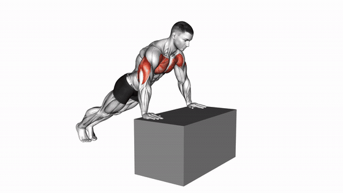
循环演示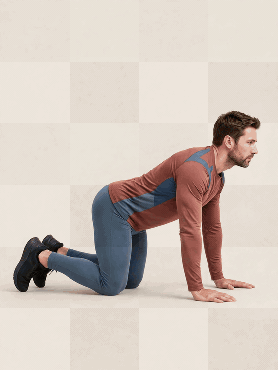
循环演示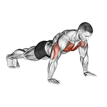
循环演示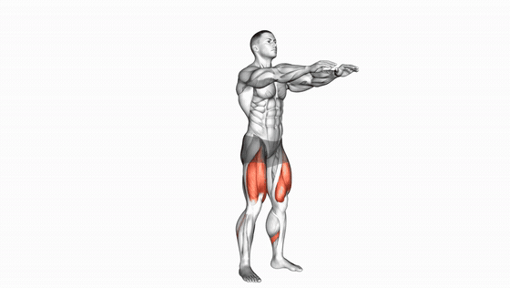
循环演示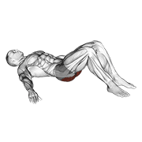
循环演示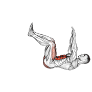
循环演示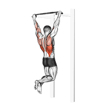
循环演示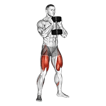
循环演示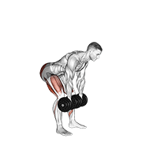
循环演示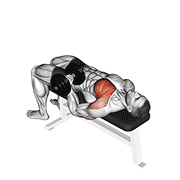
循环演示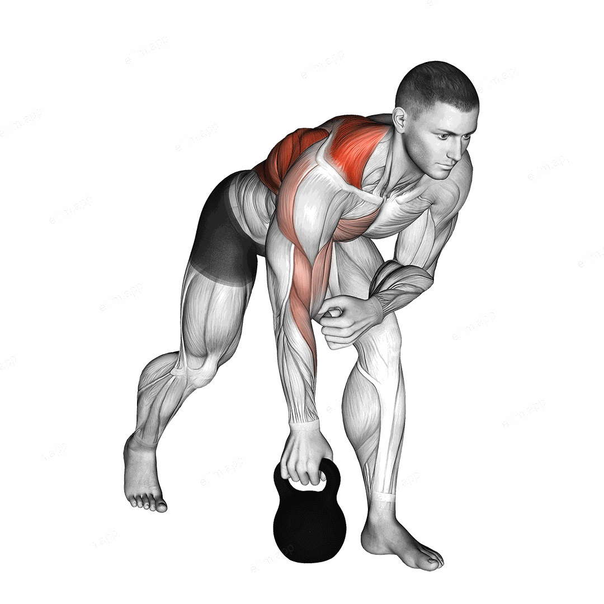
循环演示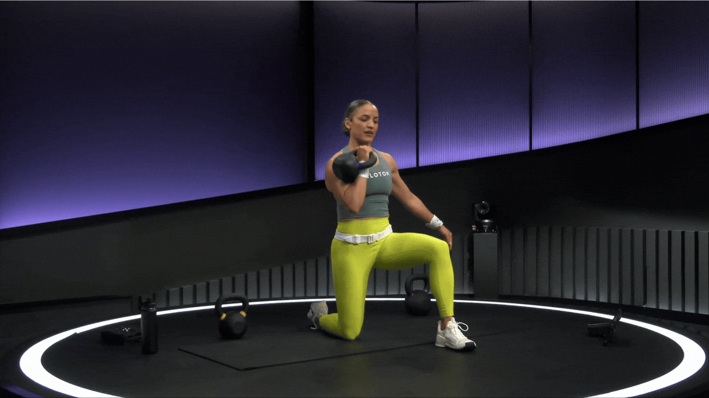
循环演示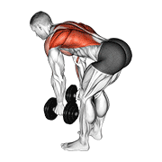
循环演示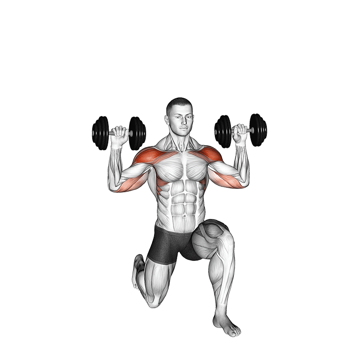
循环演示当一个级别能连续两次训练稳定做到每组 12 次，再进入下一级。不要同时加难度和加组数。
双手撑稳固桌沿，身体保持一条直线
膝盖着地，肩到膝保持笔直
胸口接近地面，肘部向斜后方
下放 3 秒，底部停 1 秒再推起